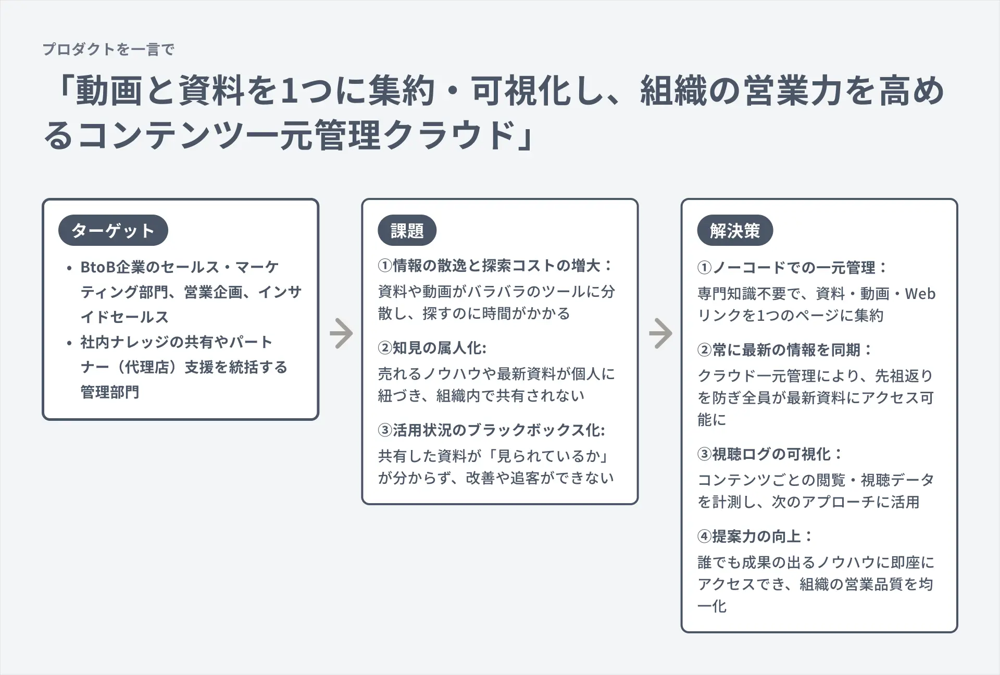
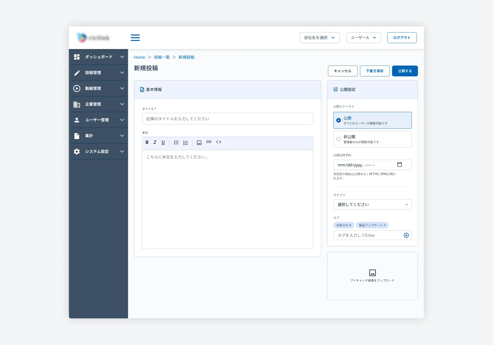
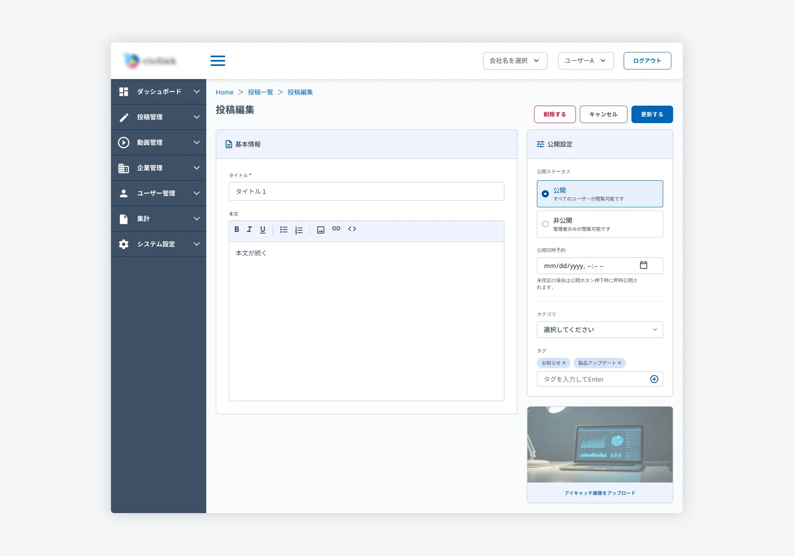
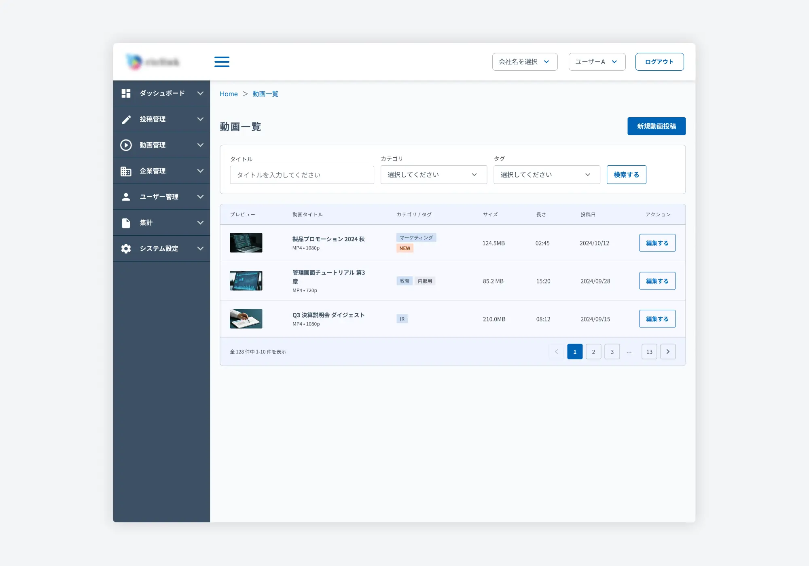
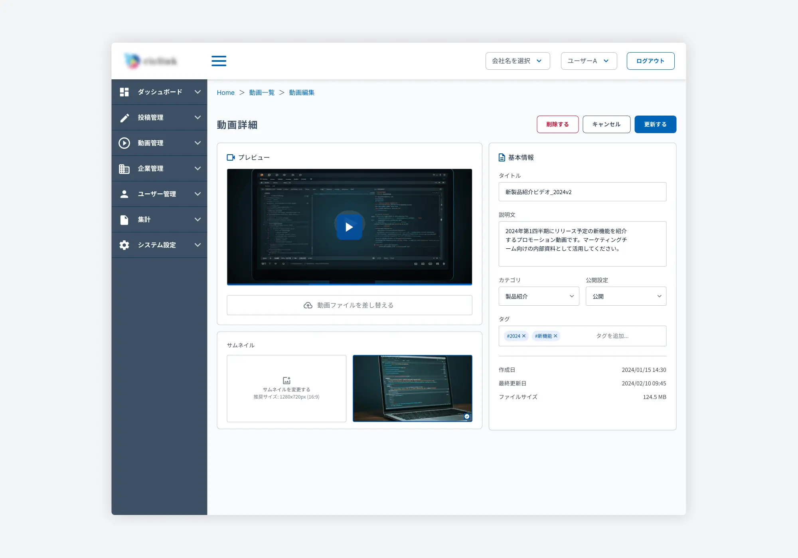

コンテンツマネジメントシステム
- Webアプリ
- 実務案件

本プロダクトは、コンテンツの一元管理やログ活用を通じて業務効率と提案力を高めるクラウドサービスの新規開発案件で、私はUIデザイナーとして本開発に携わりました。
- カテゴリー：Webアプリケーション、SaaS
- 制作種別：実務案件
- 担当領域：情報設計、ビジュアルデザイン、静的部分の実装
- 使用ツール・言語等：Figma, Laravel, PHP, Sass, Docker
- 参画期間：6ヶ月
どんなプロダクトか
本プロダクトは、営業・マーケティング領域における情報の属人化を解消し、コンテンツの一元管理・ログ活用によって業務効率と提案力を高めるクラウドサービスです。

プロジェクト概要
新規開発の受託案件（実務プロジェクト）として参画。PM1名、デザイナー2名（うち自身が1名）、エンジニア約10名のチーム体制で開発が進行しました。 戦略立案および大まかな要件定義が完了した段階からプロジェクトへ合流し、主にエンドユーザー向け画面のUI設計を担当しました。
担当範囲
- リサーチ・ヒアリング：ユーザーの行動フローやIA（情報設計）の検証に向けたヒアリングの実施
- 情報設計：ヒアリングに基づく行動フローの整理、情報のグルーピングおよび画面遷移、レイアウトの設計
- ビジュアルデザイン：トンマナの適用、デザインの精緻化
- フロントエンド実装：静的部分のコーディング、およびデザインと実装の整合性確認
最終成果物（一部）






デザインのプロセス
デザインは以下のプロセスで進めました。
- 要件把握
- ユーザーインタビュー
- 情報設計・プロトタイピング
- 検証・改善
- ビジュアルデザイン（デザインの精緻化）
要件把握
提示された大枠の要件や顧客のゴール（ビジネス目標）を正しく理解し、プロジェクトの方向性をチーム全体で目線合わせしました。
ユーザーインタビュー
自身が担当するエンドユーザーの各ロールを対象にヒアリングを実施。 実際の業務の中で「どのタイミングで資料が必要になるか」「投稿時にどこで心理的・作業的ハードルを感じているか」といった現場の実態を深掘りしました。 表面的な要望の裏にあるペインポイント（不満や課題）を整理し、理想的な行動フローやユーザーシナリオへと落とし込みました。
情報設計・プロトタイピング
ヒアリングから得たインサイトに加え、類似・競合サービスの画面構造や情報粒度をベンチマーク。 情報の優先順位、画面階層、遷移関係をロジカルに整理した上で、具体的なレイアウト設計に落とし込み、実際の操作感を検証できるプロトタイプを作成しました。
検証・UI改善
作成したプロトタイプを用いてユーザーテストを行い、「迷わず、最短で必要なタスクを達成できるか」を検証。 操作のつまずきや認知負荷を細かく観察し、ボタンの配置や導線、文言（マイクロコピー）にいたるまで、検証結果に基づいたUIの改善・ブラッシュアップを繰り返しました。
ビジュアルデザイン
検証改善が完了したこの段階で、詳細なトンマナの適用や、厳密なスタイルルール（デザインシステムやガイドライン）に基づいたビジュアルの精緻化を行いました。 また、実装フェーズでの「仕様変更によるデザインの逆戻り」を防ぐため、実装コストや開発上の制約についてエンジニアと頻繁にコミュニケーションを継続。再利用可能なコンポーネントとしてUIを強固に整理することで、手戻りのないスムーズな実装引き継ぎを実現しました。
振り返り
本プロジェクトは、新規開発の受託案件ということもあり、プロジェクト全体を通して「高い開発効率」が強く求められる環境でした。 そのためUIデザイナーとして、要件や目的を満たすUIを素早く検証・具現化することはもちろん、実装フェーズへのスムーズな移行を見据えた「デザインと実装の橋渡し」を特に意識して立ち回りました。
具体的には、画面のレイアウト設計の初期段階からエンジニアサイドと密にコミュニケーションをとり、実装コストや技術的な実現可能性を逆算しながら設計を進めました。また、私自身が普段から静的部分の実装（コーディング）を行う経験を活かし、デザインデータの構造自体をはじめからHTMLのマークアップ構造に最適化した形で作成しました。これにより、エンジニアがコードに落とし込みやすい、実装のしやすさを徹底的に配慮した設計を実現しました。
結果として、開発終盤の予期せぬ手戻りを最小限に抑え、UIデザイナーという立場からプロジェクト全体の「スムーズな開発とスピード感の担保」に大きく貢献できたと考えています。デザインの美しさだけでなく、ビジネスの文脈や開発効率までを俯瞰して設計する重要性を実感したプロジェクトです。